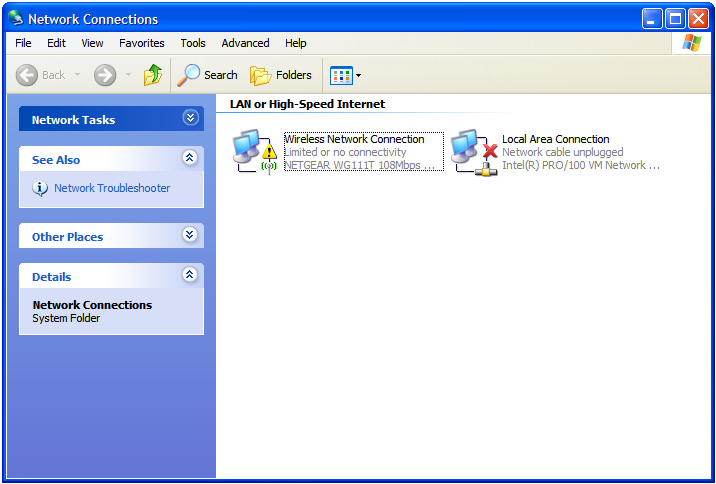

Step 2
To check the status of your wireless connection with the Sky wireless router:
-
From your desktop, click on START and select CONTROL PANEL
-
From the Control Panel window, select Network and Internet Connections

-
Select Network Connections

-
In the Network Connections window, look for the Wireless Connection icon
 -
If the Wireless Connection icon has a yellow triangle with an exclamation mark (!) where the red cross is shown in the screen above, you will need to follow Steps 6 – 18 below to manually configure your IP settings
- If the Wireless Connection icon does not have a red cross or yellow triangle, this means you are successfully connected to the Sky wireless router - if you are still experiencing wireless connection problems, go to check your web browser’s proxy settings
-
To manually configure your IP Settings:
- In the Network Connections window, Right Click on the Wireless Connection icon, then click on Properties at the bottom of the menu
-
In the Wireless Network Connection Properties window, scroll down in the ‘This connection uses the following items’ window until you see Internet Protocol (TCP/IP) – click this once, then select Properties
-
In the Internet Protocol (TCP/IP) Properties window:
-
Select Use the following IP address
-
Set the IP address to: 192.168.0.X (where X must be a number of your choice between 2 and 254 and should be unique for each PC connecting to the Sky wireless router)
-
Set the Subnet Mask to 255.255.255.0
-
Set the Default gateway as 192.168.0.1
-
Select Use the following DNS server addresses
-
Set the Preferred DNS server to 192.168.0.1
-
Leave the Alternate DNS server blank
-
Click OK
-
Click OK again on the Wireless Network Connection Properties window
-
Restart your computer and open a browser window to see if this has resolved the issue